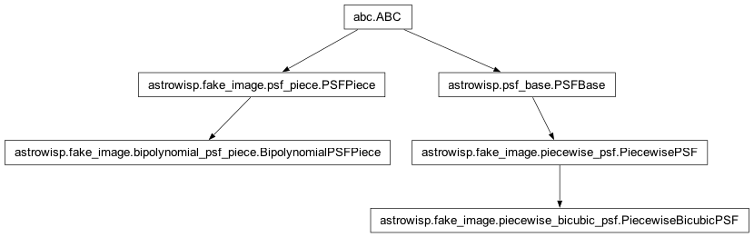
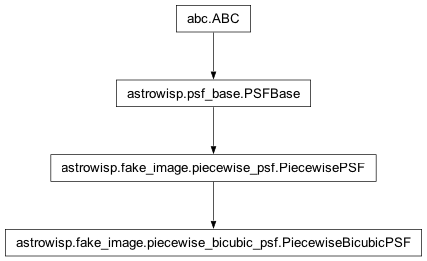

astrowisp.fake_image.piecewise_bicubic_psf module
Class Inheritance Diagram

Defines the PiecewiseBicubicPSF class.
- class astrowisp.fake_image.piecewise_bicubic_psf.PiecewiseBicubicPSF(boundaries, psf_parameters)[source]
Bases:
PiecewisePSFA piecewise PSF class where the PSF over each piece is a bi-cubic function.
- __init__(boundaries, psf_parameters)[source]
Initialize a PiecewiseBicubicPSF with the given shape.
- Parameters:
boundaries – Dictionary (keys
xandy) listing the cell horizontal/vertical boundaries.psf_parameters –
A dictionary of 2x2 structures with keys:
- values: The values of the piece bi-cubic polynomial af the
intersections of the horizontal & vertical
boundaries.
- d_dx: The x derivatives of the piece bi-cubic polynomial af
the intersections of the horizontal & vertical
boundaries.
- d_dy: The y derivatives of the piece bi-cubic polynomial af
the intersections of the horizontal & vertical
boundaries.
- d2_dxdy: The x,y cross-derivatives of the piece bi-cubic
polynomial af the intersections of the horizontal & vertical
boundaries.
- Returns:
None